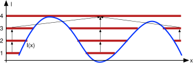
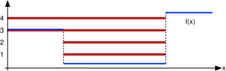
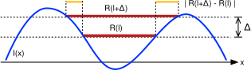

Table of Contents
The extermal regions of an image are the connected components of the level sets \(S_l = \{ x : I(x) \leq l \}, l \in \real\) of the image \(I(x)\). Consider a discretization of the intensity levels \(l\) consisting of \(M\) samples \(\mathcal{L}=\{0,\dots,M-1\}\). The extremal regions \(R_l \subset S_l\) of the level sets \(S_l, l \in \mathcal{L}\) can be arranged in a tree, where a region \(R_l\) is a children of a region \(R_{l+1}\) if \(R_l \subset R_{l+1}\). The following figures shows a 1D example where the regions are denoted by dark thick lines:

Note that, depending on the image, regions at different levels can be identical as sets:

A stable extremal region is an extremal region that does not change much as the index \(l\) is varied. Here we use a criterion which is similar but not identical to the original paper. This definition is somewhat simpler both to understand and code.
Let \(B(R_l)=(R_l,R_{l+1},\dots,R_{l+\Delta})\) be the branch of the tree \(R_l \subset R_{l+1} \subset \dots \subset R_{l + \Delta}\) rooted at \(R_l\). We associate to the branch the (in)stability score
\[ v(R_l) = \frac{|R_{l+\Delta} - R_l|}{|R_l|}. \]
This score is a relative measure of how much \(R_l\) changes as the index is increased from \(l\) to \(l+\Delta\), as illustrated in the following figure.

The score is low if the regions along the branch have similar area (and thus similar shape). We aim to select maximally stable branches; then a maximally stable region is just a representative region selected from a maximally stable branch (for simplicity we select \(R_l\), but one could choose for example \(R_{l+\Delta/2}\)).
Roughly speaking, a branch is maximally stable if it is a local minimum of the (in)stability score. More accurately, we start by assuming that all branches are maximally stable. Then we consider each branch \(B(R_{l})\) and its parent branch \(B(R_{l+1}):R_{l+1}\supset R_l\) (notice that, due to the discrete nature of the calculations, they might be geometrically identical) and we mark as unstable the less stable one, i.e.:
- if \(v(R_l)<v(R_{l+1})\), mark \(R_{l+1}\) as unstable;
- if \(v(R_l)>v(R_{l+1})\), mark \(R_{l}\) as unstable;
- otherwise, do nothing.
This criterion selects among nearby regions the ones that are more stable. We optionally refine the selection by running (starting from the bigger and going to the smaller regions) the following tests:
- \(a_- \leq |R_{l}|/|R_{\infty}| \leq a_+\): exclude MSERs too small or too big ( \(|R_{\infty}|\) is the area of the image).
- \(v(R_{l}) < v_+\): exclude MSERs too unstable.
For any MSER \(R_l\), find the parent MSER \(R_{l'}\) and check if \(|R_{l'} - R_l|/|R_l'| < d_+\): remove duplicated MSERs.
parameter alt. name standard value set by \(\Delta\) delta5 vl_mser_set_delta() \(a_+\) max_area0.75 vl_mser_set_max_area() \(a_-\) min_area3.0/ \(|R_\infty|\) vl_mser_set_min_area() \(v_+\) max_var0.25 vl_mser_set_max_variation() \(d_+\) min_diversity0.2 vl_mser_set_min_diversity()
Volumetric images
The code supports images of arbitrary dimension. For instance, it is possible to find the MSER regions of volumetric images or time sequences. See vl_mser_new() for further details
Ellipsoids
Usually extremal regions are returned as a set of ellipsoids fitted to the actual regions (which have arbitrary shape). The fit is done by calculating the mean and variance of the pixels composing the region:
\[ \mu_l = \frac{1}{|R_l|}\sum_{x\in R_l}x, \qquad \Sigma_l = \frac{1}{|R_l|}\sum_{x\in R_l} (x-\mu_l)^\top(x-\mu_l) \]
Ellipsoids are fitted by vl_mser_ell_fit(). Notice that for a n dimensional image, the mean has n components and the variance has n(n+1)/2 independent components. The total number of components is obtained by vl_mser_get_ell_dof() and the total number of fitted ellipsoids by vl_mser_get_ell_num(). A matrix with an ellipsoid per column is returned by vl_mser_get_ell(). The column is the stacking of the mean and of the independent components of the variance, in the order (1,1),(1,2),..,(1,n), (2,2),(2,3).... In the calculations, the pixel coordinate \(x=(x_1,...,x_n)\) use the standard index order and ranges.
Algorithm
The algorithm is quite efficient. While some details may be tricky, the overall idea is easy to grasp.
- Pixels are sorted by increasing intensity.
- Pixels are added to a forest by increasing intensity. The forest has the following properties:
- All the descendent of a certain pixels are subset of an extremal region.
- All the extremal regions are the descendants of some pixels.
- Extremal regions are extracted from the region tree and the extremal regions tree is calculated.
- Stable regions are marked.
- Duplicates and other bad regions are removed.
- Remarks
- The extremal region tree which is calculated is a subset of the actual extremal region tree. In particular, it does not contain redundant entries extremal regions that coincide as sets. So, for example, in the calculated extremal region tree, the parent \(R_q\) of an extremal region \(R_{l}\) may or may not correspond to \(R_{l+1}\), depending whether \(q\leq l+1\) or not. These subtleties are important when calculating the stability tests.